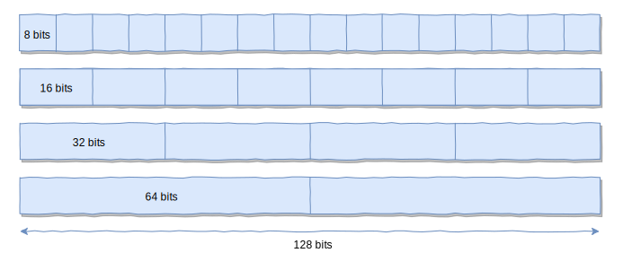
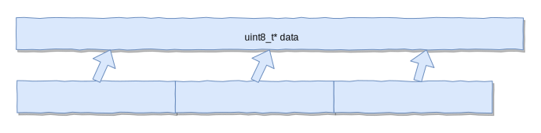
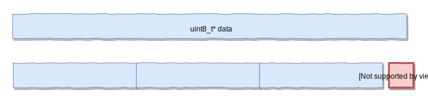
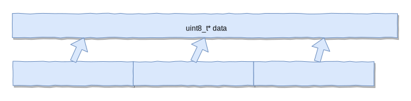
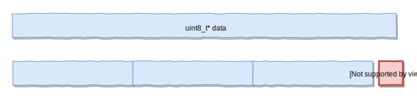
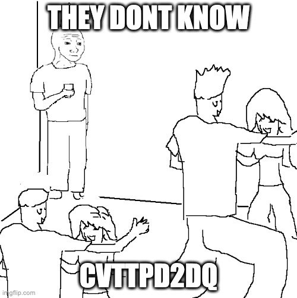

SIMD in higher level languages
Matthias Wahl - BobKonf 2021
Disclaimer
No SIMD expert.
Just curious.
About me
Systems engineer at Wayfair
Working on Tremor, doing Rust for a living.
Thanks to BobKonf 2020!
Agenda
- Intro
- What is in your chip and how to get access?
- SIMD Programming 101
- Array programming and SIMD: Julia
- SIMD on the JVM
- Parsing JSON in Rust
Intro
AMD Epyc 7702 ES (Zen 2 | Rome | CCD)
AMD Epyc 7702 ES (Zen 2 | Rome | CCD)
AMD Epyc 7702 ES (Zen 2 | Rome | CCD)
What does it offer?
SIMD
Single Input - Multiple Data
Form of Data Parallelism

huge registers
128, 256, 512 bits
interpreted as packed numeric types (signed, unsigned integers, floats, doubles)
huge set of instructions
Lane-wise operations e.g. add each lane in 2 registers, logical-shift-left
horizontal operations, e.g. add together all lanes in a register
masked operations
How to get access?
Via instruction set extensions.
Not necessarily available on your CPU.
x86 (intel, AMD)
- MMX (Pentium 5, 1997)
- SSE
- SSE2
- SSE3
- SSE4
- SSE4.2
- AVX (2011 Sandy Bridge)
- AVX2 (2013 Haswell)
- AVX512 (intel only, Xeon and Skylake-X)
ARM
- NEON (Starting with Armv7)
- SVE
RISC-V
- Extension V
PowerPC
- AltiVec
Quiz
CVT T PD 2 DQ
Convert with Truncation (round towards zero) Packed Double Precision Floating Point Numbers to double-quadword (64 bit) integers
Exercise for the reader
VPMOVZXBQ
VFMADD231SD
Auto Vectorization
Your compiler knows our CPU better than we do.
int32_t sum(int32_t* array, size_t len) {
int32_t s = 0;
for (size_t i = 0; i < len; i++) {
s += array[i];
}
return s;
}
Simple sum of given array of ints
On GodboltSmall benchmark with len = 1000
| no optimizations (-O0) | auto-vectorization enabled (-O3) |
|---|---|
| 630 ticks | 153 ticks |
.L4:
vmovdqu (%rax), %xmm2
vinserti128 $0x1, 16(%rax), %ymm2, %ymm0
addq $32, %rax
vpaddd %ymm0, %ymm1, %ymm1
cmpq %rdx, %rax
jne .L4
.L3:
leaq 1(%rdx), %rcx
addl (%rdi,%rdx,4), %eax
cmpq %rcx, %rsi
jbe .L1
addl (%rdi,%rcx,4), %eax
leaq 2(%rdx), %rcx
cmpq %rcx, %rsi
jbe .L1
...
ret
Autovectorized assembly
C intrinsics
C intrinsics
- offered by every platform
- compilers ship platform specific headers
C intrinsics
- Full control
- Very low-level
- Super complicated and horribly named
- Needs reimplementation for every platform
SIMD Programming 101
- split data into SIMD register sized chunks
- load from memory into SIMD register
- do the magic
- store to memory / extract result
- handle the scalar tail
 



Example:
Find first byte in array
A.K.A. memchr
x86_64 AVX2
x86_64 AVX2 - SIMD Loop
x86_64 AVX2 - SIMD Loop
Wishlist for high level SIMD
- SIMD Register abstraction / type
- abstracts over different architectures and extensions
- provides fallbacks for other architectures
- auto-detects available features on host CPU
- Intuitive interaction with language type-system
- Generates efficient instructions
Challenges for the language designer
- Vector / Array are goto data-structures for consecutive values
- Variables == Stack / Heap
- SIMD == Registers
- Only exists in CPU - otherwise not a thing
- Find a good runtime representation
Array programming and SIMD: Julia
Array Programming
convenient syntax to broadcast functions onto array/matrix elements
compiler can freely vectorize
SIMD in Julia
NTuple{4, VecElement{Float64}}
implemented on top of LLVM vector type
<4 x double>
Abstracts over different platforms
SIMD in Julia
register = (VecElement(0.5), VecElement(1.1), VecElement(1.2), VecElement(0.0))
compiler transforms this into LLVM vector
operations on SIMD registers: calling LLVM intrinsics via embedded llvm IR strings:
llvmcall("%res = fadd <4 x double> %0, %1 ...")
SIMD.jl
https://github.com/eschnett/SIMD.jl
Some more convenience
SIMD findfirst
SIMD findfirst
- 7x faster than unoptimized scalar loop
- 4x slower than C stdlib memchr
Julia: judgement day
- Array programming FTW for vectorization
- Very raw SIMD interface in stdlib
- Ergonomic SIMD code with SIMD.jl
- Good interaction with Arrays load/store, gather/scatter
- LLVM vector type not as powerful as native intrinsics
SIMD on the JVM
Vector API - JEP 338
Part of JDK 16 (to be released March 2021)
Early access builds available.
Vector
Typed interface to SIMD registers
Parameterized on lane type
and register size
Vector
Vector size property of the host CPU
auto-detected at runtime
Vector
Hotspot C2 JIT emits SIMD instructions if available
Fallback scalar methods in plain java
memchr in java with Vector API
Hard to beat auto-vectorized scalar version:

Java: judgment day
- Thoughtful and rich API
- Portable SIMD programming
- Immensely powerful -> JVM ecosystem
- A bit unpredictable performance
Parsing JSON in Rust
core::arch
- Access to RAW vendor specific intrinsics
- Exposes C instrinsics
-
runtime checks for supported features
if is_x86_feature_detected!("avx2") { unsafe { foo_avx2() }; } - Possibility to compile portable binaries with optimizations for different target_features
SIMD-json
https://github.com/simd-lite/simd-json
Port of lemires C++ SIMD-json project
In heavy use at Tremor
SIMD-json
Focussed on maxing out performance
Deliberate choice to use vendor intrinsics
Different stuff works for different platforms
Completely different Algorithm
Compared to scalar version
Scalar Approach
- Iterate the byte stream
- building up a JSON data-structure (HashMap/Array/...)
SIMD-json Approach
- Multiple passes over the byte stream
-
Pass 1: detect structural characters:
{ } : " , whitespace - Pass 2: Iterate over structurals, build "tape" of tokens, build struct, map, array etc from that.
structural character detection algorithm "shufti" (ARM NEON)
Up to 2x faster than Rust serde_json
according to serde-rs/json-benchmark
Wrapping up
- Support for explicit SIMD programming more and more widespread
- C, C++, Java, Rust, Julia, Zig, Swift, wasm
- Portable
- Ergonomic
- Promising Potential But No silver bullet
Wrapping up
- Performance optimization hard
- ... requires extensive testing and benchmarking
- ... initial hunch is often incorrect
- ... simple porting of scalar algorithms does not work
But...
- It's fun!
- It's beneficial!
You can show off!
